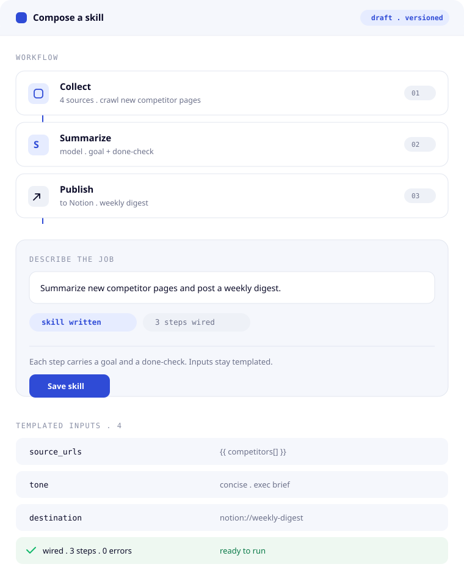
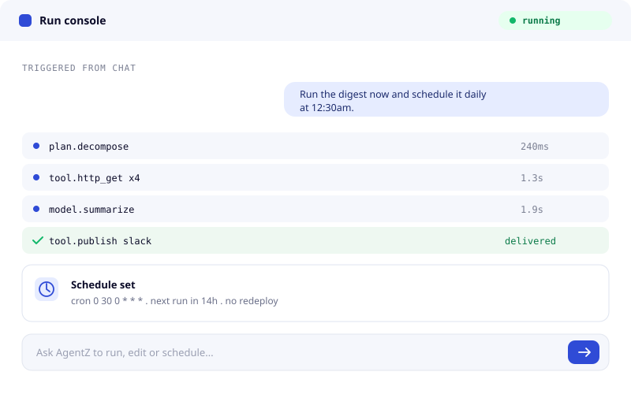
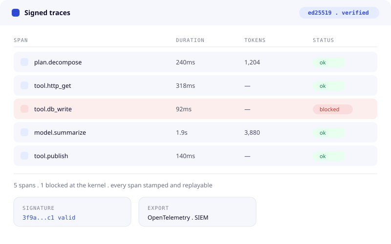
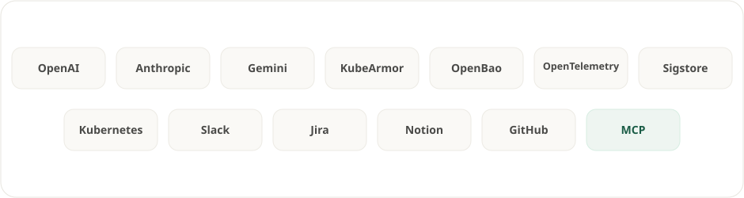

Skills
Reusable, versioned building blocks.
By AccuKnox · Zero Trust for Agentic AI
Zero Trust Agentic AI
Security Platform
Build, run and govern real agents. Secure by default, so the power of agentic AI never costs you control.
The platform
Reusable, versioned building blocks.
Chain steps, schedule, hand off work.
Shared memory, files, and knowledge.
Roles, ownership, shared scope.
Secure by default. No standing access.
Every step recorded and replayable.
Compose skills, wire them into workflows, and roll them out across your organization. Bring any model or framework. Security stays underneath, so you focus on what the agents actually do.
Package capabilities as reusable skills. Versioned, testable, and shared across every agent your team runs.
Roles, teams, and shared context so every function can put agents to work, not just the platform team.
Chain skills into workflows. Trigger on a schedule, an event, or a request. Hand off cleanly between agents.
Describe the job in a sentence. AgentZ writes the skill and wires every step.
Chat, API, CLI, or a schedule. Any framework, any model, no redeploy.
Resolved at the edge, checked at the kernel, stamped to a signed trace.



You focus on skills and workflows. AgentZ quietly handles the four things that usually turn an agent demo into a production incident.
Secrets stay in the vault. Agents get scoped access at the moment they need it, and never see the key.
Every skill runs with the narrowest permissions that get the job done. No standing cloud roles.
Every action, tool call, and decision is visible in one place, in real time.
A signed trace for every run. SOC and compliance reviews stop being a project.
The first agents in production are not doing science fiction. They are doing the spreadsheet, the ticket, the on-call page, the quarterly report. Boring, valuable, repeatable.
Triage alerts, run remediations, and automate routine ops on a schedule.
Enrich incidents and run guarded response workflows over real tools.
Pull, summarize, and distribute recurring reports across systems.
Resolve tickets and update records with auditable, scoped access.
Automate finance, HR, and procurement tasks under tight controls.
Compose your own agents from marketplace building blocks.
Runtime intelligence
Runtime telemetry logs every egress by domain, port and protocol. Each connection is allowed or blocked at the kernel and recorded, so nothing leaves without a record.
Get early accessCompatible

Section 10 · template
Placeholder copy. Replace this with the story for this section. Two or three sentences that carry one idea.
Call to actionSection 11 · template
Placeholder lead. Swap in the copy that belongs here.
Section 12 · template
Placeholder copy. This template pairs a media slot with a short block of text.
Call to actionAgentZ is in preview. Leave your details and we'll get you in as we open access, build, run and govern, end to end.